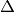
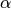
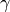

C2O module¶
- C2O.C2O(image, NormDelta, RadDelta, NE, Nalpha, Nbeta, SigC2Ot)¶
Function for the feature calculation.
The aim of this function is to compute a description feature of a color image which includes the color and texture information. The attempted result is to obtain on unique vector for the whole image which characterize the best its content.
This function uses the following formulas to calculate the number of pixel to shift on the image for the difference of color (dX and dY)
After the difference computing, the result obtained is the coocurence matrix :
(Matrix computed from a 128*128 pixel sample of the Food0006.ppm image from VISTEX database)
From this matrix, the function extract the signature descriptor by a spherical quantization (see:SphereQuantif()). The result obtained from the previous exemple is :

This function is called as shown below :
SigC2O = C2O(image, NormDelta, RadDelta, NE, Nalpha, Nbeta, SigC2Ot)
Parameters: - image (string) – Path directory of the image on which you need the feature calculation.
- NormDelta (float) – Norm of  vector for the image color diference.
- RadDelta (float) – Radix of vector for the image color diference.
- Nalpha (float) – Number of intervals considered for the signature calculation on the  component.
- Nbeta (float) – Number of intervals considered for the signature calculation on the
 component.
component. - SigC2Ot (queue) – Return parameter for the parralelise version.
Returns: The signature of the image in the RadLambda orientation and at the NormLambda distance for color difference in a vector of NE*Nalpha*Nbeta
Return type: np.ndarray
This function use SphericQuantif()
{kind=link}
- C2O.C2OPatch(image, kp)¶
Function for the feature calculation relative to keypoint detection (from openCV’s SIFT).
This function uses the C2O() function on patch of 64*64 pixel around each keypoint.
This function is called as shown below :
MatSigC2O = C2OPatch(image,kp)
Parameters: - image (string) – Path directory of the image on which you need the feature calculation.
- kp (OpenCV keypoint structure array) – Keypoints matrix from OpenCv’s SIFT keypoint detection.
Returns: The C2O signatures for each keypoint in an array.
Return type: np.ndarray
This function use C2O()
- C2O.CarthesianToSpheric(xyz)¶
Function for computing spherical coordinates from carthesian ones.
This function computes this transformation following the formulas shown below :
These parameters are corresponding to :
- r : The norm of the vector formed by the point to convert in spherical coordinate and the origin point.
- : The radix between the
 plan and the vector.
plan and the vector. - : The radix between the plan and the vector.
This function is called as shown below :
SphereCoords=CarthesianToSpheric(xyz)
Parameters: xyz (np.ndarray) – The 3-D matrix in carthesian coordinates. Returns: The 3-D matrix in spherical coordinates. Return type: np.ndarray Note
The fonction return the radix values in range and
in range
- C2O.RGBtoLAB(imag, MatPass, stdIllum, gamma)¶
Function for computing the transformation from RGB to space. This function use the transition RGB to XYZ space to compute the space.
This transformation is computed as show below :
With
 depending on the RGB space considered for the image (all possible matrix are available in Constant.MatPass).
depending on the RGB space considered for the image (all possible matrix are available in Constant.MatPass).After this transformation, the is computed following these formulas :

To make proper the RGB to XYZ transformation, it’s make an inverse companding to counteract the non-linearity of the RGB.
The  parameter associate with each RGB space is specified in the Constant module documentation (Associated with the transformation matrix).
This function is called as shown below :
Lab = RGBtoLAB(imag, MatPass, stdIllum, gamma)
Parameters: - gamma (float) – Inverse companding parameter .
- imag (np.ndarray) – A matrix containing the image on which you need the C2O feature calculation.
- MatPass (np.ndarray) – The transition matrix for the BGR to XYZ transformation (set at ‘0’ to have the default value)
- stdIllum (np.ndarray) – The standard illuminant choosen for the BGR to XYZ transformation (set at ‘0’ to have the default value).
Returns: The coocurence matrix in spherical coordinates.
Return type: np.ndarray
- C2O.SphericQuantif(C2OMat, NE, Nalpha, Nbeta)¶
Function for computing the spherical quantization for the C2O signature.
The C2O coocurence matrix is really large in term of the number of values and it is not really easy to compare with each other because of the 3-dimensions. So to solve it, the matrix is quantisize by computing this sphérical quantization to obtain a vector in 1-D.
This function is called as shown below :
SigC2O = SphericQuantif(C2OMat, NE, Nalpha, Nbeta)
Parameters: - C2OMat (np.ndarray) – The coocurence matrix in spherical coordinates.
- Nalpha (float) – Number of intervals considered for the signature calculation on the component.
- Nbeta (float) – Number of intervals considered for the signature calculation on the component.
Returns: The signature of the image
Return type: A vector of 4*Nalpha*Nbeta float64
{kind=link}
- C2O.SphericToCartesian(Spheric)¶
Function for computing carthesian coordinates from spherical ones.
Parameters: Spheric (np.ndarray) – The coocurence matrix in spherical coordinates. Returns: The coocurence matrix in carthesian coordinates. Return type: np.ndarray
- class C2O.Timer¶
Bases: :class:`object`
- start()¶
- stop()¶
- C2O.diff(img, dX, dY)¶
Function for the calculation of a difference of color on the whole image, following the vector caracterized here by dX and dY (calculate from the radix and the norm of the vector). The diffenrence between the image and it’s shifted copy is computed as shown below
This function is called as shown below :
imgDiff = diff(img,dX,dY)
Parameters: - img (np.ndarray) – A N-dimensions matrix containing the image on which you need the C2O feature calculation.
- dX (float) – Number of pixel to shift on the X axis.
- dY (float) – Number of pixel to shift on the Y axis.
Returns: The difference of color image
Return type: ndarray
{kind=link}